04_singlecell_analysis
Lasse Meyer
1/24/2022
Last updated: 2022-02-15
Checks: 7 0
Knit directory: IMC/
This reproducible R Markdown analysis was created with workflowr (version 1.7.0). The Checks tab describes the reproducibility checks that were applied when the results were created. The Past versions tab lists the development history.
Great! Since the R Markdown file has been committed to the Git repository, you know the exact version of the code that produced these results.
Great job! The global environment was empty. Objects defined in the global environment can affect the analysis in your R Markdown file in unknown ways. For reproduciblity it’s best to always run the code in an empty environment.
The command set.seed(20220112) was run prior to running the code in the R Markdown file. Setting a seed ensures that any results that rely on randomness, e.g. subsampling or permutations, are reproducible.
Great job! Recording the operating system, R version, and package versions is critical for reproducibility.
Nice! There were no cached chunks for this analysis, so you can be confident that you successfully produced the results during this run.
Great job! Using relative paths to the files within your workflowr project makes it easier to run your code on other machines.
Great! You are using Git for version control. Tracking code development and connecting the code version to the results is critical for reproducibility.
The results in this page were generated with repository version cf530d3. See the Past versions tab to see a history of the changes made to the R Markdown and HTML files.
Note that you need to be careful to ensure that all relevant files for the analysis have been committed to Git prior to generating the results (you can use wflow_publish or wflow_git_commit). workflowr only checks the R Markdown file, but you know if there are other scripts or data files that it depends on. Below is the status of the Git repository when the results were generated:
Ignored files:
Ignored: .DS_Store
Ignored: IMC/.DS_Store
Ignored: IMC/.Rhistory
Ignored: IMC/.Rproj.user/
Ignored: IMC/analysis/.Rhistory
Ignored: IMC/analysis/figure/
Ignored: Non_IMC/.DS_Store
Ignored: Non_IMC/.Rhistory
Ignored: Non_IMC/.Rproj.user/
Ignored: Non_IMC/analysis/.DS_Store
Ignored: Non_IMC/analysis/.RData
Ignored: Non_IMC/analysis/.Rhistory
Ignored: Non_IMC/data/.DS_Store
Ignored: Non_IMC/docs/.DS_Store
Ignored: Non_IMC/docs/figure/.DS_Store
Untracked files:
Untracked: IMC/analysis/01_lib_read_data.Rmd
Untracked: IMC/analysis/02_spillover_correction.Rmd
Untracked: IMC/analysis/03_QC.Rmd
Untracked: IMC/analysis/04_singlecell_analysis.Rmd
Untracked: IMC/analysis/05_astir.Rmd
Unstaged changes:
Deleted: Non_IMC/docs/figure/Metadata_ccRCC.Rmd/reproduce birch-1.png
Deleted: Non_IMC/docs/figure/Metadata_ccRCC.Rmd/reproduce birch-2.png
Deleted: Non_IMC/docs/figure/Metadata_ccRCC.Rmd/reproduce birch-3.png
Deleted: Non_IMC/docs/figure/Metadata_ccRCC.Rmd/reproduce birch-4.png
Deleted: Non_IMC/docs/figure/Metadata_ccRCC.Rmd/viz-1.png
Note that any generated files, e.g. HTML, png, CSS, etc., are not included in this status report because it is ok for generated content to have uncommitted changes.
These are the previous versions of the repository in which changes were made to the R Markdown (IMC/analysis/04_singlecell_analysis_IMMUCAN.Rmd) and HTML (IMC/docs/04_singlecell_analysis_IMMUCAN.html) files. If you’ve configured a remote Git repository (see ?wflow_git_remote), click on the hyperlinks in the table below to view the files as they were in that past version.
| File | Version | Author | Date | Message |
|---|---|---|---|---|
| Rmd | cf530d3 | lassedochreden | 2022-02-15 | wflow_publish(c("analysis/04_singlecell_analysis_IMMUCAN.Rmd")) |
Here, I will perform analysis on the single-cell level.
sce <- readRDS("~/switchdrive/RCC_project/data/rcc_sce_Batch20200528.rds")Dimensionality reduction
First, I will visualize the cells in low-dimensional space.
library(scater)
library(uwot)
library(tidyverse)
set.seed(22)
sce <- runUMAP(sce, subset_row = rowData(sce)$use_channels,
exprs_values = "exprs")
plotReducedDim(sce, dimred = "UMAP", colour_by = "Indication")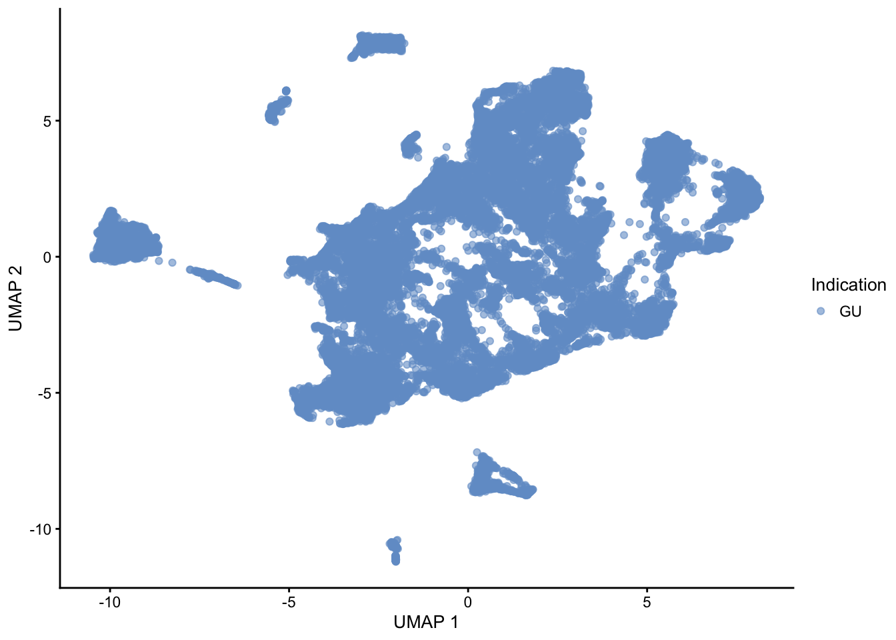
plotReducedDim(sce, dimred = "UMAP", colour_by = "SampleId")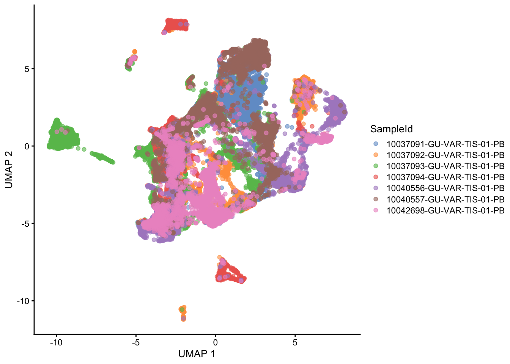
Marker expression visualization
Next, I will visualize single-cell marker expression.
#Select markers for downstream visualization
rowData(sce)$use_channel <- !grepl("Iridium|Histone",rowData(sce)$Target)
#Select marker categories
rowData(sce)$marker_cat <- grepl("CD",rowData(sce)$Target,ignore.case = FALSE,fixed = TRUE)
#Visualize marker of interest
plotReducedDim(sce, dimred = "UMAP",
colour_by = "CarbonicAnhydrase",
#shape_by = "Indication",
by_exprs_values = "exprs",
point_size = 0.5)
#Visualize all markers at once
library(cowplot)
all_plots <- lapply(c(rownames(sce)[rowData(sce)$use_channel]),
function(x){
p <- plotReducedDim(sce, dimred = "UMAP",
colour_by = x,
by_exprs_values = "exprs",
point_size = 0.5)
return(p)
})
plot_grid(plotlist = all_plots)
Clustering
Here I will use Rphenograph (Jaccard-based weights, Louvain clustering as community detection algorithm) to cluster the cells.
library(Rphenograph)Loading required package: igraph
Attaching package: 'igraph'The following objects are masked from 'package:dplyr':
as_data_frame, groups, unionThe following objects are masked from 'package:purrr':
compose, simplifyThe following object is masked from 'package:tidyr':
crossingThe following object is masked from 'package:tibble':
as_data_frameThe following object is masked from 'package:scater':
normalizeThe following object is masked from 'package:GenomicRanges':
unionThe following object is masked from 'package:IRanges':
unionThe following object is masked from 'package:S4Vectors':
unionThe following objects are masked from 'package:BiocGenerics':
normalize, path, unionThe following objects are masked from 'package:stats':
decompose, spectrumThe following object is masked from 'package:base':
unionlibrary(RColorBrewer)
set.seed(22)
out <- Rphenograph(t(assay(sce, "exprs")[rowData(sce)$use_channel,]),
k = 100)Run Rphenograph starts:
-Input data of 39125 rows and 37 columns
-k is set to 100 Finding nearest neighbors...DONE ~ 33.133 s
Compute jaccard coefficient between nearest-neighbor sets...DONE ~ 73.988 s
Build undirected graph from the weighted links...DONE ~ 19.702 s
Run louvain clustering on the graph ...DONE ~ 7.826 sRun Rphenograph DONE, totally takes 134.649s. Return a community class
-Modularity value: 0.841665
-Number of clusters: 25clusters <- factor(membership(out[[2]]))
sce$clusters <- clusters
col_clust = colorRampPalette(brewer.pal(9,"Paired"))(length(unique(sce$clusters)))
plotReducedDim(sce, dimred = "UMAP", colour_by = "clusters")+
scale_color_manual(values = col_clust)Scale for 'colour' is already present. Adding another scale for 'colour',
which will replace the existing scale.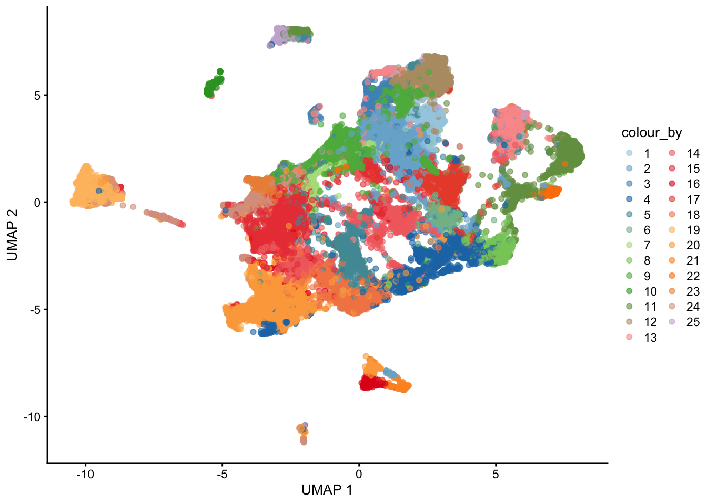
Cluster annotation based on marker expression
Question: aggregateAcrossCells Why mean not median (robust against outliers? -
Transformation/Normalization Which method to choose for visualization? - Arcsinh transformation (cofactor = 1) plus/minus Winsorizing (0-99.9%)?
followed by: A. Min-max(0,1), B. Z-scores, C. Min-max/99th quantile (see older script)
library(ComplexHeatmap)
library(foreach)
library(viridis)
library(dittoSeq)
#Option 1: based on Z-scores of asinh-transformed expression counts
mean_sce <- aggregateAcrossCells(sce, ids = sce$clusters,
statistics = "median",
use.assay.type = "exprs",
subset.row = rowData(sce)$use_channel)
dittoHeatmap(mean_sce, genes = rownames(mean_sce),
assay = "exprs", cluster_cols = T, scale = "row",
heatmap.colors = viridis(100), annot.by = c("clusters","Indication"))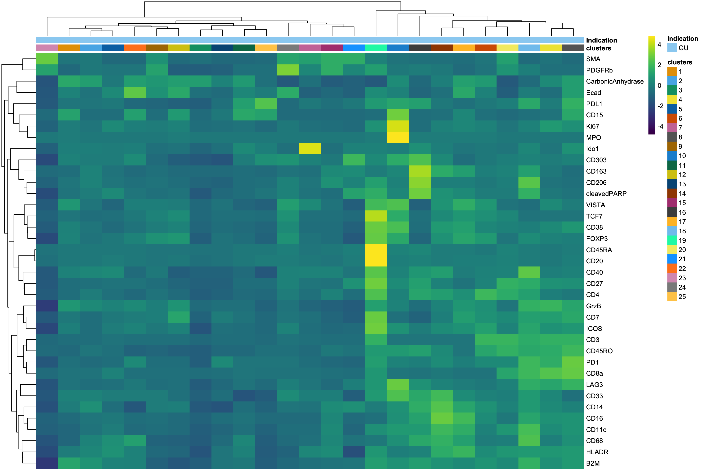
#Option 2: Min-Max [0,1] normalization of asinh-transformed expression counts
assay(sce, "min_max") <- assay(sce, "exprs") - rowMins(assay(sce, "exprs"))
assay(sce, "min_max") <- assay(sce, "min_max") / (rowMaxs(assay(sce, "exprs")) - rowMins(assay(sce, "exprs")))
mean_sce <- aggregateAcrossCells(sce, ids = sce$clusters,
statistics = "median",
use.assay.type = "min_max",
subset.row = rowData(sce)$use_channel)
dittoHeatmap(mean_sce, genes = rownames(mean_sce),
assay = "min_max", cluster_cols = T, scale = "none",
heatmap.colors = viridis(100), annot.by = c("clusters","Indication"))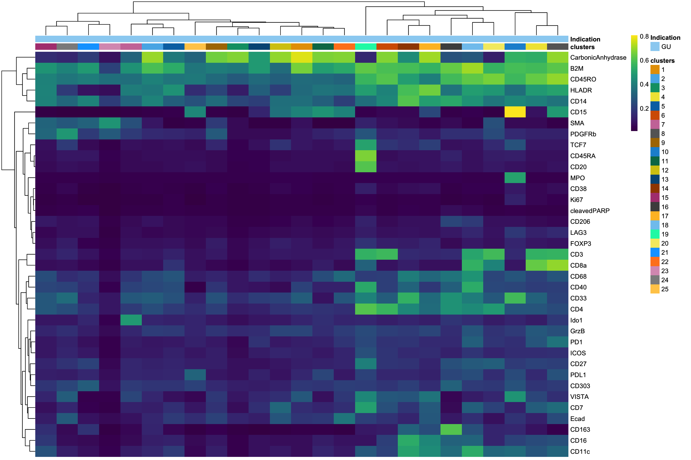
###Optional: Customizable visualization with Complex Heatmap
###1. Heatmap body
HM_body <- assay(mean_sce,"min_max")
#Colors heatmap body
#col_main <- colorRamp2(c(0, 0.5, 1), c("#0000FF","#FFFFFF","#FF0000"), space = "RGB")
col_main = viridis(100)
###2. Top annotation
#Colors
col = list(clusters = colorRampPalette(brewer.pal(9,"Paired"))(length(unique(mean_sce$clusters))),
Indication = c("lightgreen")
)
col_list_1 = foreach(i=1:2) %do% {
color= col[[i]]
names(color)= sort(unique(colData(mean_sce)[,names(col)[i]]))
color
}
names(col_list_1) <- c(names(col))
#Create annotation
topanno_MCP = HeatmapAnnotation(Indication = mean_sce$Indication,
clusters = mean_sce$ids,
ncells = anno_barplot(mean_sce$ncells,border = TRUE,gp=gpar(fill="black")),
col = col_list_1)
#Plot heatmap
Heatmap(HM_body,
col = col_main,
name= "Min-Max norm",
cluster_columns = TRUE,
cluster_rows = TRUE,
row_split = rowData(mean_sce)$marker_cat,
row_dend_reorder = TRUE,
show_column_dend = FALSE,
row_title = c("Other","CD markers"),
row_title_gp = gpar(fontsize = 12),
row_title_rot = 0,
top_annotation = topanno_MCP,
border = TRUE,
show_row_names = TRUE,
show_column_names = FALSE,
column_title_gp = gpar(fontface = "bold")
) %>%
draw()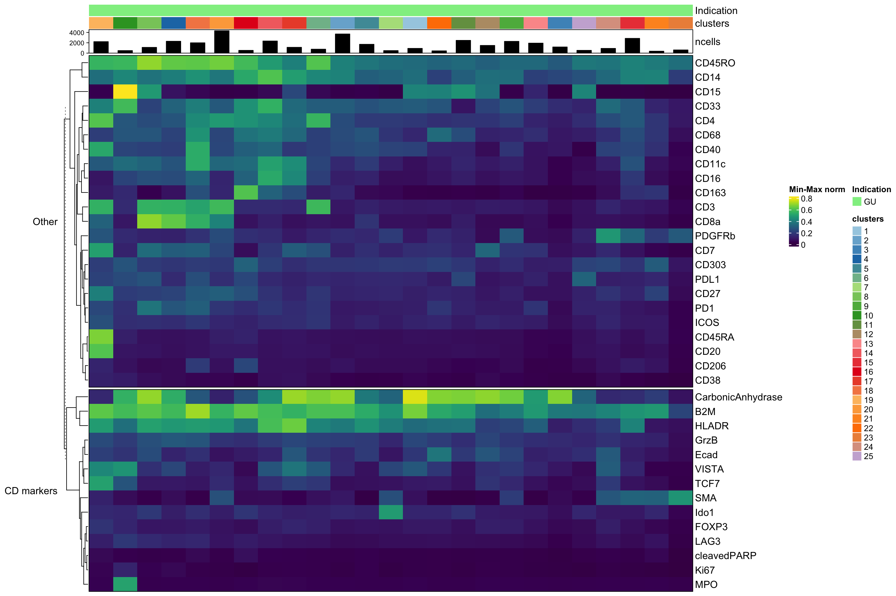
## Scoring markers by pairwise comparisons Effect sizes = Area under the curve (AUC), Cohens d log fold change Statistics for each effect size: mean, median, min, maxQuestion: Is this a used approach? Default to median Cohens log fold change?
library(scran)
library(scater)
marker.info <- scoreMarkers(sce, groups = sce$clusters, assay.type = "exprs")
chosen <- marker.info[["6"]]
ordered_AUC <- chosen[order(chosen$median.AUC, decreasing=TRUE),]
ordered_cohen <- chosen[order(chosen$median.logFC.cohen, decreasing=TRUE),]
plotExpression(sce, exprs_values = "exprs",features=rownames(ordered_cohen)[1:6],
x="clusters", colour_by="clusters")
Use Astir for automated cell type assignment
see here for full publication (Geuenich et al.,2021, Cell Systems).
#Export arsinh normalized expression matrix as csv
#Add sampleID as covariate in design matrix
expr_astir <- assay(sce,"exprs") %>% t() %>% as.data.frame() %>% mutate(sample = sce$SampleId)
write.csv(expr_astir, file = "~/Desktop/Astir/expr_astir.csv",row.names = TRUE)Next: Run Astir in conda-environment.
library(easyalluvial)
library(caret)Loading required package: lattice
Attaching package: 'caret'The following object is masked from 'package:purrr':
liftlibrary(dittoSeq)
library(viridis)
library(foreach)
#Import Astir cell type assignments
astir_type <- read_csv("~/Desktop/Astir/cell_types.csv",col_names = c("ID","cell_type"),skip = 1)Rows: 39125 Columns: 2── Column specification ────────────────────────────────────────────────────────
Delimiter: ","
chr (2): ID, cell_type
ℹ Use `spec()` to retrieve the full column specification for this data.
ℹ Specify the column types or set `show_col_types = FALSE` to quiet this message.sce$astir_type <- astir_type$cell_type
#Mark channels used for cell type assignment
astir_channel = c("CD45RO","CD45RA","CD3","CD68","CD20","Ecad","CarbonicAnhydrase","SMA","CD38","MPO")
rowData(sce)$use_astir <- rowData(sce) %>% as.data.frame() %>% mutate(use_astir = ifelse(rownames(sce) %in% astir_channel,TRUE,FALSE)) %>% pull(use_astir)
plotReducedDim(sce, dimred = "UMAP",
colour_by = "astir_type",
#shape_by = "Indication",
by_exprs_values = "exprs")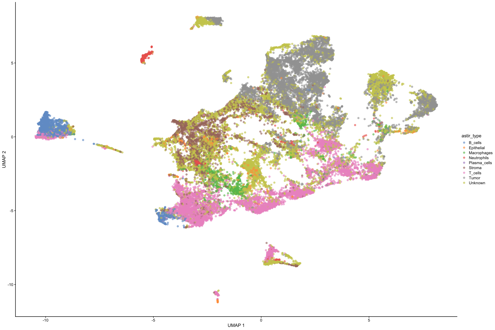
#Heatmap visualization (all cells)
dittoHeatmap(sce, genes = rownames(sce)[rowData(sce)$use_astir],
assay = "exprs", cluster_cols = F, order.by = "astir_type" , scale = "none",
heatmap.colors = viridis(100), annot.by = c("astir_type","clusters"))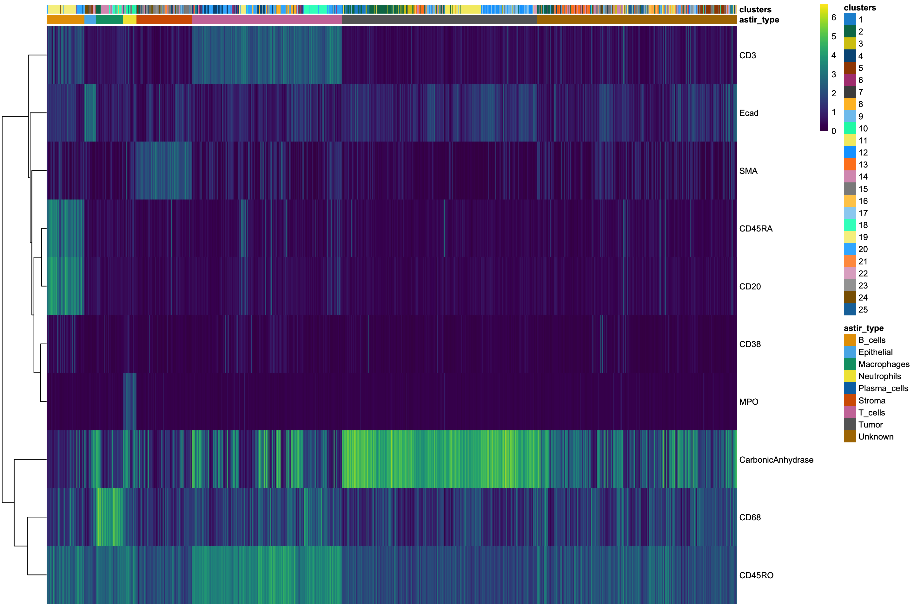
dittoHeatmap(sce, genes = rownames(sce)[rowData(sce)$use_astir],
assay = "exprs", cluster_cols = F, order.by = "clusters" , scale = "none",
heatmap.colors = viridis(100), annot.by = c("astir_type","clusters"))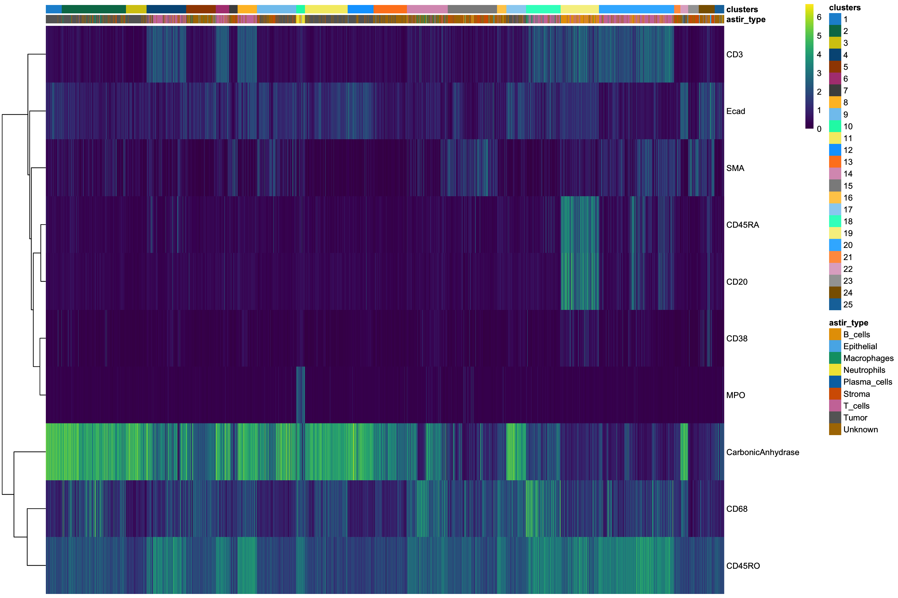
#Heatmap visualization (aggregated)
mean_sce_astir <- aggregateAcrossCells(sce, ids = sce$astir_type,
statistics = "median",
use.assay.type = "exprs",
subset.row = rowData(sce)$use_astir)
dittoHeatmap(mean_sce_astir, genes = rownames(mean_sce_astir),
assay = "exprs", cluster_cols = T, scale = "none",
heatmap.colors = viridis(100), annot.by = c("astir_type"))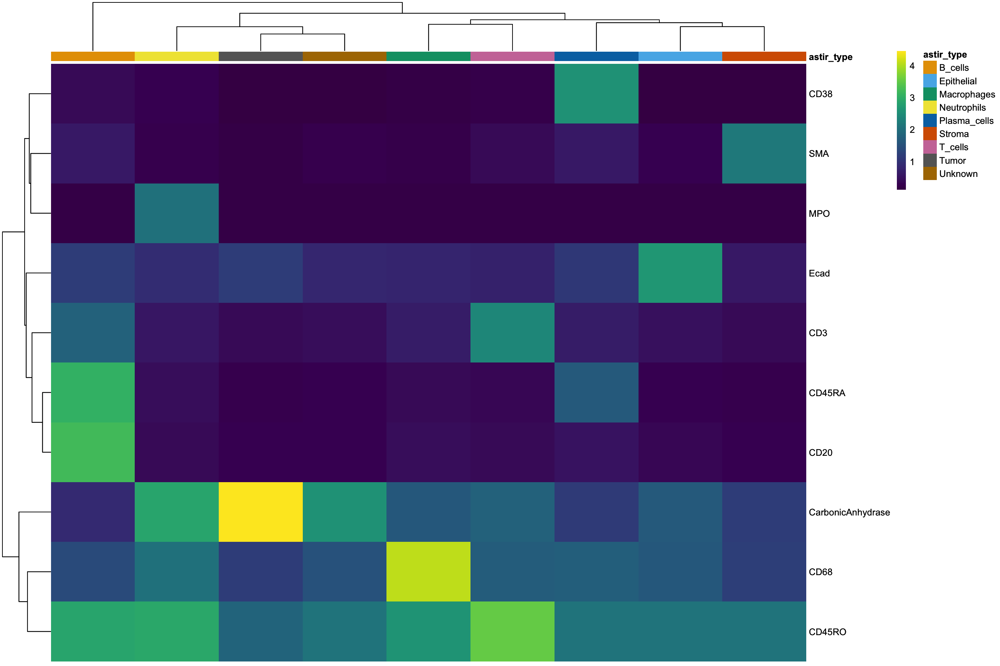
alluvial_wide(data = colData(sce) %>% as.data.frame() %>% select("cell_labels","astir_type"),
max_variables = 6,
fill_by = 'all_flows',
col_vector_flow = RColorBrewer::brewer.pal(12, "Paired"))+
theme_classic(base_size = 12, base_line_size = 0.5)+
theme(axis.title.y = element_blank(), axis.ticks.y = element_blank(), axis.text.y = element_blank())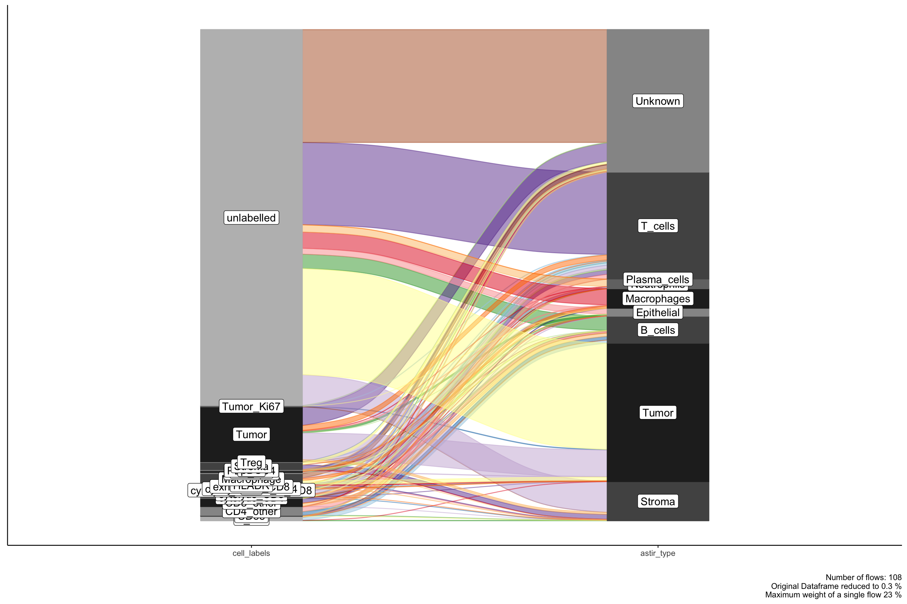
T_cell = c("cytolytic_CD8","CD8_other","cytolytic_exhausted_CD8","Treg","exhausted_CD8","CD4_other","cytolytic_CD4","PD1_CD4","cytolytic_PD1_CD4")
B_cell = c("B_cell")
tumor = c("Tumor","Tumor_Ki67")
neutrophil = c("Neutrophil")
macrophage = c("Macrophage")
plasma = c("CD38")
stroma = c("Stroma")
astir_test <- colData(sce) %>%
as.data.frame() %>%
select(cell_labels,astir_type) %>%
filter(cell_labels != "unlabelled") %>%
mutate(cell_label_simple = ifelse(cell_labels %in% T_cell,"T_cells",
ifelse(cell_labels %in% B_cell,"B_cells",
ifelse(cell_labels %in% tumor,"Tumor",
ifelse(cell_labels %in% plasma, "Plasma_cells",
ifelse(cell_labels %in% macrophage, "Macrophages",
ifelse(cell_labels %in% stroma,"Stroma",
ifelse(cell_labels %in% neutrophil,"Neutrophils", "Unknown/Other")
))))))
) %>%
mutate(astir_type = ifelse(astir_type %in% c("Unknown","Other","Epithelial"),"Unknown/Other",astir_type))
alluvial_wide(data = astir_test %>% select("cell_label_simple","astir_type"),
max_variables = 6,
fill_by = 'all_flows',
col_vector_flow = RColorBrewer::brewer.pal(12, "Paired"))+
theme_classic(base_size = 12, base_line_size = 0.5)+
theme(axis.title.y = element_blank(), axis.ticks.y = element_blank(), axis.text.y = element_blank())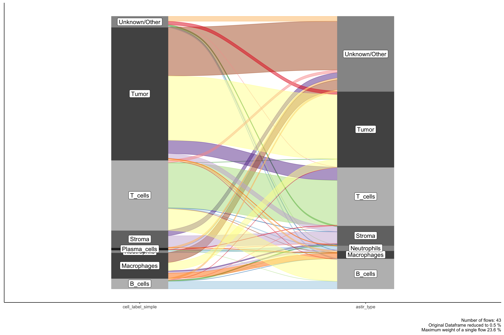
run<-unique(astir_test$astir_type)
astir_senspe <- foreach(i = seq_along(run),.combine = rbind) %do% {
sen <- sensitivity(table(astir_test$astir_type == run[i],astir_test$cell_label_simple == run[i]))
spe <- specificity(table(astir_test$astir_type == run[i],astir_test$cell_label_simple == run[i]))
data.frame(sen = sen, spe = spe, row.names = run[i])
}
astir_senspe sen spe
T_cells 0.9327953 0.6391709
Unknown/Other 0.7317073 0.4450549
Tumor 0.9180677 0.4841518
Macrophages 0.9897726 0.2050691
Stroma 0.9674229 0.6643836
Neutrophils 0.9901001 0.9886364
B_cells 0.9131174 0.7236467write.csv(astir_senspe, file = paste0("~/Desktop/Astir/",unique(sce$BatchId),"_astir_senspe.csv"),)Subclustering
Improve resolution for cell subtypes (e.g. CD3+ cell compartment) Three methods: 1. Select single or multiple clusters for subclustering 2. Positive or negative for certain markers via GMM 3. Use metaclusters from astir analysis
Question: Which method to use?
library(mclust)
library(dittoSeq)
library(viridis)
library(scuttle)
library(cowplot)
##Method A: Select single or multiple clusters for subclustering
plotExpression(sce, exprs_values = "exprs",features=c("CD3"),
x="clusters", colour_by="clusters")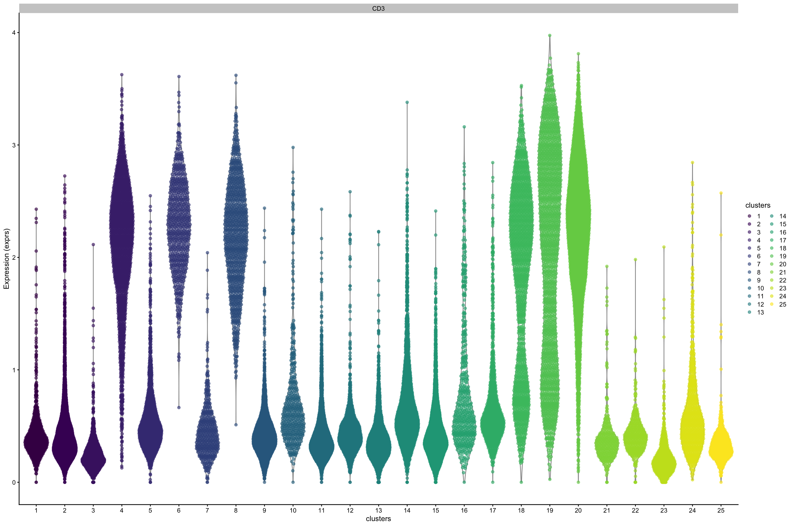
#Clusters: 2,9,12,16,20
CD3_clus <- c("3","5","7","15","17")
sce_CD3 <- sce[,sce$clusters %in% CD3_clus]
#Re-run UMAP
#sce_CD3 <- runUMAP(sce_CD3, subset_row = rowData(sce_CD3)$use_channels,
#exprs_values = "exprs")
#plotReducedDim(sce_CD3, dimred = "UMAP") #colour_by = "Indication")
#Re-run Clustering
#out <- Rphenograph(t(assay(sce_CD3, "exprs")[rowData(sce_CD3)$use_channel,]),
#k = 100)
#clusters <- factor(membership(out[[2]]))
#sce_CD3$clusters <- clusters
##Method B: Positive or negative for certain markers via GMM
# CD3
cur_clust <- Mclust(assay(sce, "exprs")["CD3",], G = 2)
plot(cur_clust, what = "classification")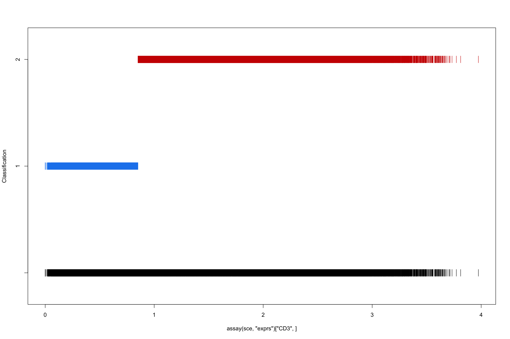
plot(cur_clust, what = "density")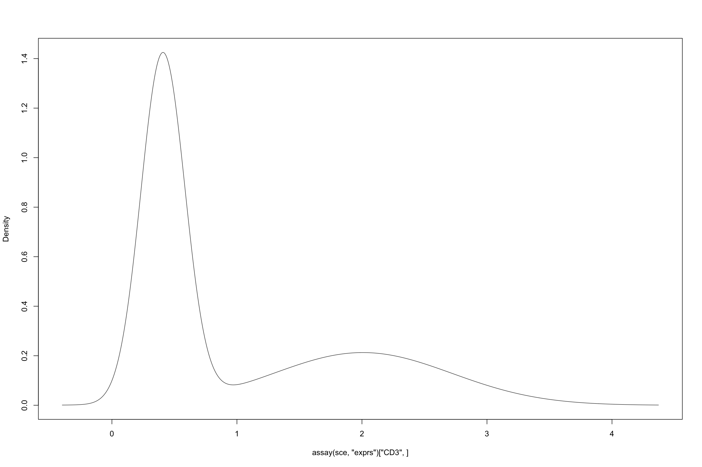
#sce$CD3_class <- cur_clust$classification
sessionInfo()R version 4.1.2 (2021-11-01)
Platform: x86_64-apple-darwin17.0 (64-bit)
Running under: macOS Big Sur 10.16
Matrix products: default
BLAS: /Library/Frameworks/R.framework/Versions/4.1/Resources/lib/libRblas.0.dylib
LAPACK: /Library/Frameworks/R.framework/Versions/4.1/Resources/lib/libRlapack.dylib
locale:
[1] en_US.UTF-8/en_US.UTF-8/en_US.UTF-8/C/en_US.UTF-8/en_US.UTF-8
attached base packages:
[1] grid stats4 stats graphics grDevices utils datasets
[8] methods base
other attached packages:
[1] mclust_5.4.9 caret_6.0-90
[3] lattice_0.20-45 easyalluvial_0.3.0
[5] scran_1.22.1 dittoSeq_1.6.0
[7] viridis_0.6.2 viridisLite_0.4.0
[9] foreach_1.5.2 ComplexHeatmap_2.10.0
[11] RColorBrewer_1.1-2 Rphenograph_0.99.1
[13] igraph_1.2.11 cowplot_1.1.1
[15] forcats_0.5.1 stringr_1.4.0
[17] dplyr_1.0.8 purrr_0.3.4
[19] readr_2.1.2 tidyr_1.2.0
[21] tibble_3.1.6 tidyverse_1.3.1
[23] uwot_0.1.11 Matrix_1.3-4
[25] scater_1.22.0 ggplot2_3.3.5
[27] scuttle_1.4.0 SingleCellExperiment_1.16.0
[29] SummarizedExperiment_1.24.0 Biobase_2.54.0
[31] GenomicRanges_1.46.1 GenomeInfoDb_1.30.1
[33] IRanges_2.28.0 S4Vectors_0.32.3
[35] BiocGenerics_0.40.0 MatrixGenerics_1.6.0
[37] matrixStats_0.61.0 workflowr_1.7.0
loaded via a namespace (and not attached):
[1] utf8_1.2.2 tidyselect_1.1.1
[3] BiocParallel_1.28.3 pROC_1.18.0
[5] munsell_0.5.0 ScaledMatrix_1.2.0
[7] codetools_0.2-18 statmod_1.4.36
[9] future_1.23.0 withr_2.4.3
[11] colorspace_2.0-2 progressr_0.10.0
[13] highr_0.9 knitr_1.37
[15] ggalluvial_0.12.3 rstudioapi_0.13
[17] listenv_0.8.0 labeling_0.4.2
[19] git2r_0.29.0 GenomeInfoDbData_1.2.7
[21] bit64_4.0.5 farver_2.1.0
[23] pheatmap_1.0.12 rprojroot_2.0.2
[25] parallelly_1.30.0 vctrs_0.3.8
[27] generics_0.1.2 ipred_0.9-12
[29] xfun_0.29 R6_2.5.1
[31] doParallel_1.0.17 ggbeeswarm_0.6.0
[33] clue_0.3-60 rsvd_1.0.5
[35] locfit_1.5-9.4 bitops_1.0-7
[37] DelayedArray_0.20.0 assertthat_0.2.1
[39] vroom_1.5.7 promises_1.2.0.1
[41] scales_1.1.1 nnet_7.3-16
[43] beeswarm_0.4.0 gtable_0.3.0
[45] beachmat_2.10.0 globals_0.14.0
[47] processx_3.5.2 timeDate_3043.102
[49] rlang_1.0.1 GlobalOptions_0.1.2
[51] splines_4.1.2 ModelMetrics_1.2.2.2
[53] broom_0.7.12 reshape2_1.4.4
[55] yaml_2.2.2 modelr_0.1.8
[57] backports_1.4.1 httpuv_1.6.5
[59] tools_4.1.2 lava_1.6.10
[61] ellipsis_0.3.2 jquerylib_0.1.4
[63] ggridges_0.5.3 Rcpp_1.0.8
[65] plyr_1.8.6 sparseMatrixStats_1.6.0
[67] zlibbioc_1.40.0 RCurl_1.98-1.6
[69] ps_1.6.0 rpart_4.1-15
[71] GetoptLong_1.0.5 haven_2.4.3
[73] ggrepel_0.9.1 cluster_2.1.2
[75] fs_1.5.2 magrittr_2.0.2
[77] data.table_1.14.2 RSpectra_0.16-0
[79] magick_2.7.3 circlize_0.4.13
[81] reprex_2.0.1 RANN_2.6.1
[83] whisker_0.4 hms_1.1.1
[85] evaluate_0.14 readxl_1.3.1
[87] gridExtra_2.3 shape_1.4.6
[89] compiler_4.1.2 crayon_1.4.2
[91] htmltools_0.5.2 later_1.3.0
[93] tzdb_0.2.0 lubridate_1.8.0
[95] DBI_1.1.2 dbplyr_2.1.1
[97] MASS_7.3-54 cli_3.1.1
[99] parallel_4.1.2 metapod_1.2.0
[101] gower_1.0.0 pkgconfig_2.0.3
[103] getPass_0.2-2 recipes_0.1.17
[105] xml2_1.3.3 vipor_0.4.5
[107] bslib_0.3.1 dqrng_0.3.0
[109] XVector_0.34.0 prodlim_2019.11.13
[111] rvest_1.0.2 callr_3.7.0
[113] digest_0.6.29 RcppAnnoy_0.0.19
[115] rmarkdown_2.11 cellranger_1.1.0
[117] edgeR_3.36.0 DelayedMatrixStats_1.16.0
[119] rjson_0.2.21 nlme_3.1-153
[121] lifecycle_1.0.1 jsonlite_1.7.3
[123] BiocNeighbors_1.12.0 limma_3.50.0
[125] fansi_1.0.2 pillar_1.7.0
[127] fastmap_1.1.0 httr_1.4.2
[129] survival_3.2-13 glue_1.6.1
[131] png_0.1-7 iterators_1.0.14
[133] bit_4.0.4 bluster_1.4.0
[135] class_7.3-19 stringi_1.7.6
[137] sass_0.4.0 BiocSingular_1.10.0
[139] irlba_2.3.5 future.apply_1.8.1